Difensori
2 Mateu Morey (TD)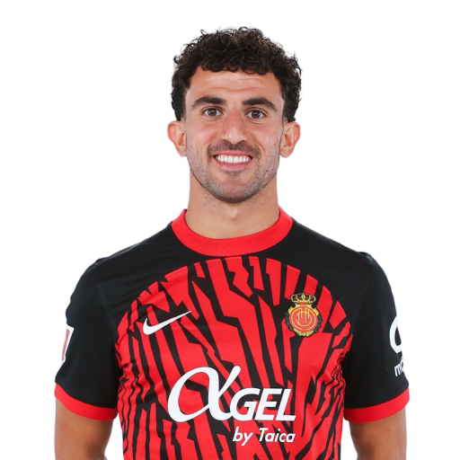
3 Toni Lato (TS)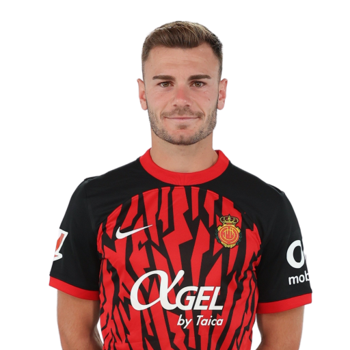
4 Siebe Van der Heyden (DC)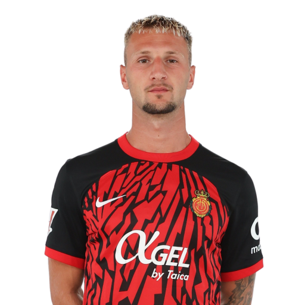
6 José Copete (DC)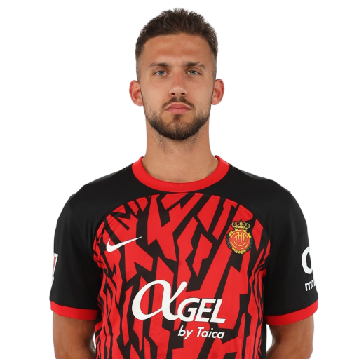
21 Antonio Raíllo (DC)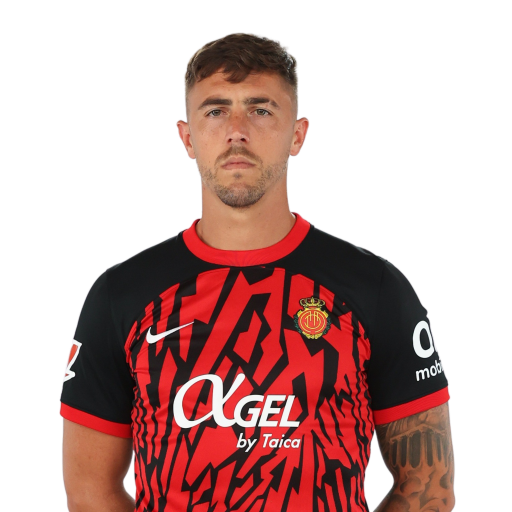
22 Johan Mojica (TS)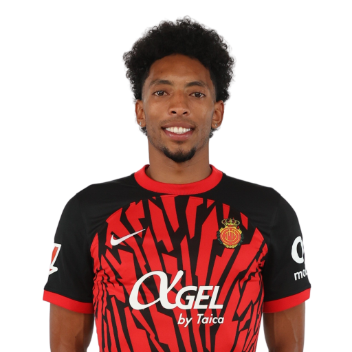
23 Pablo Maffeo (TD)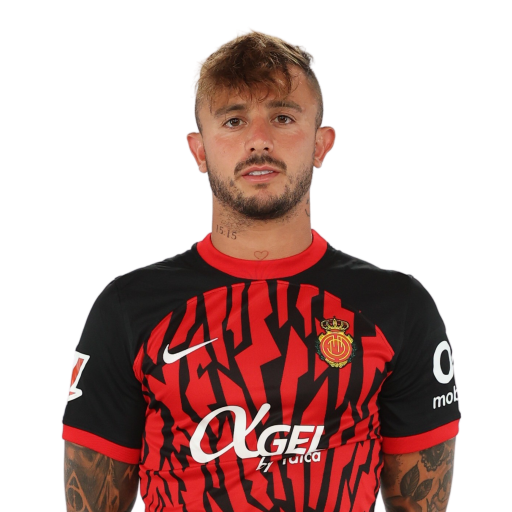
24 Martin Valjent (DC)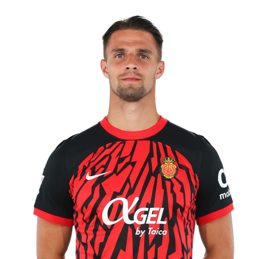
Centrocampisti
5 Omar Mascarell (CC)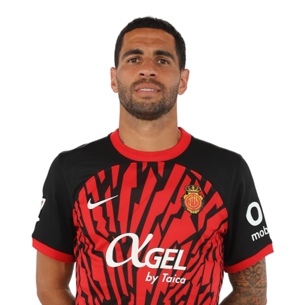
8 Manu Morlanes (CC)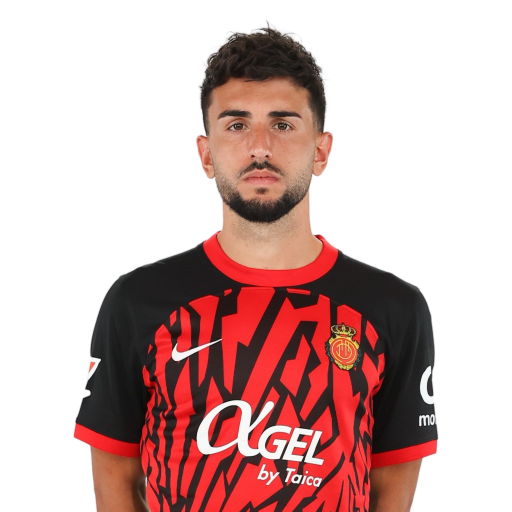
10 Sergi Darder (CC)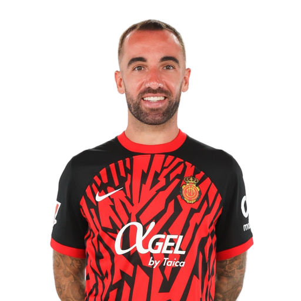
12 Samú Costa (CC)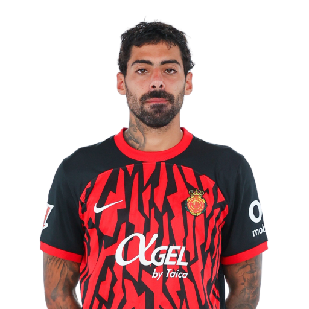
14 Dani Rodríguez (TQ)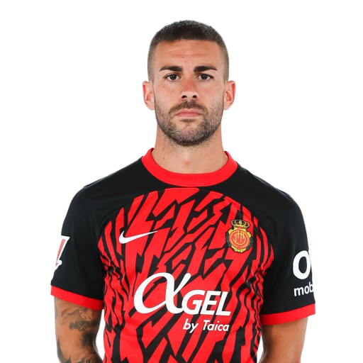
18 Antonio Sánchez (CC)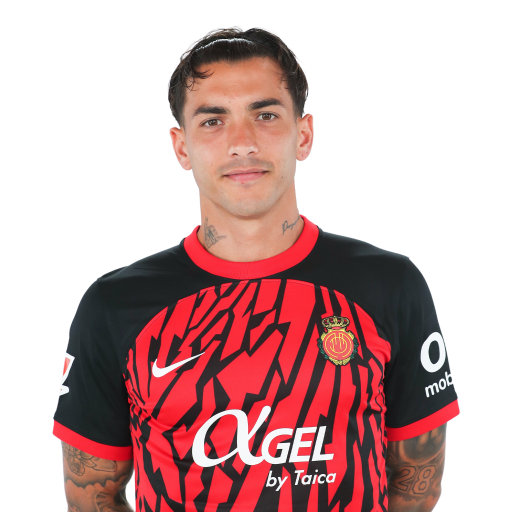
27 Robert Navarro (TQ)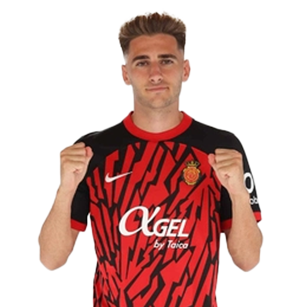
Attaccanti
7 Vedat Muriqi (AT)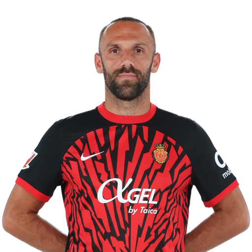
9 Abdón Prats (AT)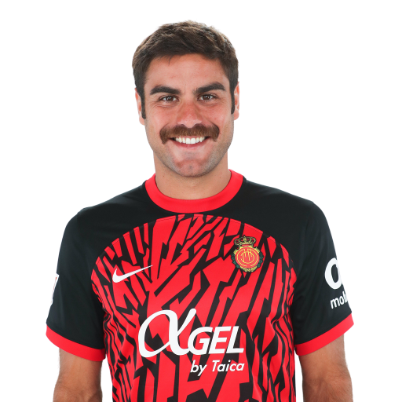
11 Takuma Asano (AD)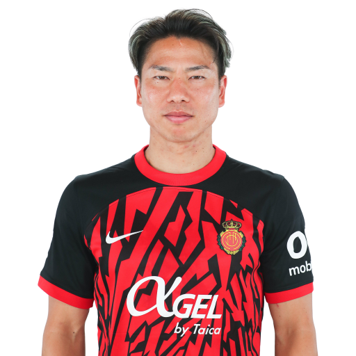
16 Valery Fernández (AD/td)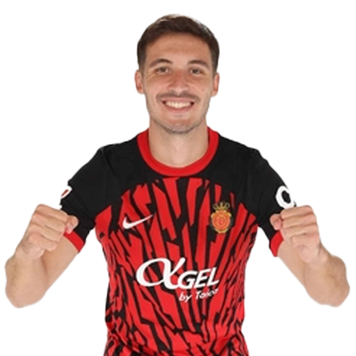
17 Cyle Larin (AT)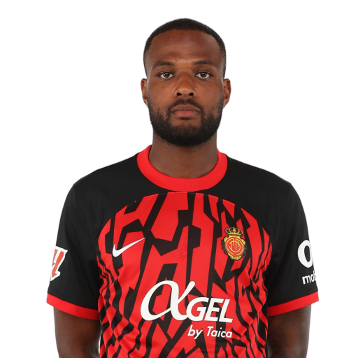
19 Javi Llabrés (AS)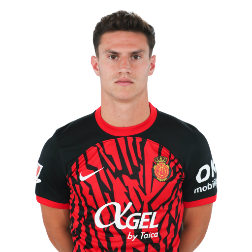
20 Chiquinho (AS)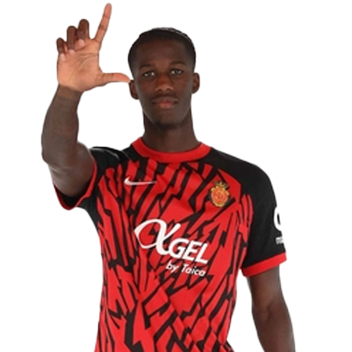